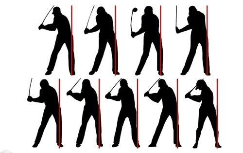
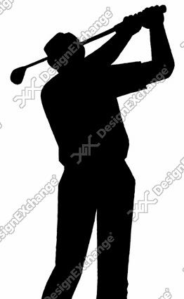

ゴルフ場検索
沖縄のゴルフ場検索なら、沖縄のゴルフ場をシンプル且つキレイなデザインで一括検索できる当サイトをご利用ください。ゴルフ場検索は今後当ホームページを使って探すこと間違いなし！！おみくじも引けちゃうよ！！
ゴルフ場検索サイトなら当ＨＰが断然便利ですよ！
ゴルフ場検索サイトでは全国のゴルフ場が検索できますが、沖縄県のゴルフ場には特に力を入れてます。コース情報なども見れるのでゴルフ場検索にはきっとお役に立ちますよ。
お好みの検索条件で探したい方はページ上部の検索ページからキーワードを入力してゴルフ場検索してみてください。
地域別から都道府県別、海外の条件から絞って検索できます。

